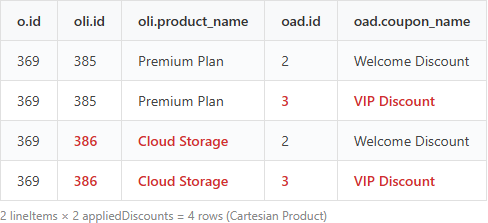
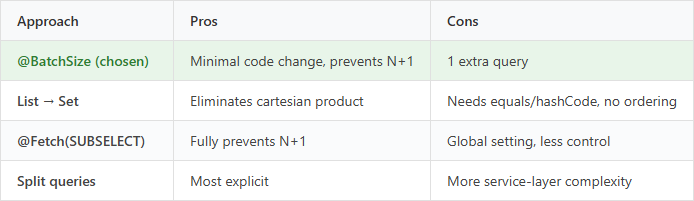

This is Part 2. Part 1 (The Order Total Was Doubled — When the Database Did Multiplication) explained this bug using a "merging two spreadsheets" analogy. This post dives into the JPA/Hibernate internals.
To recap: the DB had only 2 order line items, but the API response returned 4. The root cause was two @OneToMany collections JOIN FETCHed in a single JPQL query.
The problematic query:
@Query("SELECT o FROM Order o " +
"LEFT JOIN FETCH o.lineItems " + // @OneToMany List
"LEFT JOIN FETCH o.appliedDiscounts " + // @OneToMany Set
"JOIN FETCH o.customer c " +
"WHERE o.billingYear = :year AND o.billingMonth = :month " +
"ORDER BY c.name")
List<Order> findAllByMonth(...);
lineItems (List) and appliedDiscounts (Set) are JOIN FETCHed simultaneously.
The generated SQL looks like:
SELECT o.*, oli.*, oad.* FROM orders o LEFT JOIN order_line_item oli ON oli.order_id = o.id LEFT JOIN order_applied_discount oad ON oad.order_id = o.id WHERE ...
With 2 lineItems and 2 appliedDiscounts for Order 369:

2 × 2 = 4 rows. This is a cartesian product.
When Hibernate maps these 4 rows back to entities:
Set (appliedDiscounts): Auto-deduplicates via equals/hashCode → 2 entries (correct)List (lineItems): Bag semantics — no deduplication → 4 entries (oli.id 385, 385, 386, 386)List is an ordered collection. Hibernate adds each SQL row's line item to the List as-is. When the same entity appears in multiple rows, the same object gets added multiple times.
"Why not just use Set for everything?" Order line items need to be displayed in insertion order. Set doesn't guarantee ordering, so List was the correct choice. The right data structure choice became an unexpected bug when it met a cartesian product.
In Hibernate 5 and earlier, fetching two List collections simultaneously would throw MultipleBagFetchException and block startup. But here, one collection is a List and the other is a Set, so no exception is thrown. The data silently inflates without any error — which makes it arguably more dangerous.
DISTINCT Doesn't Fix ItFirst attempt — add SELECT DISTINCT:
@Query("SELECT DISTINCT o FROM Order o " +
"LEFT JOIN FETCH o.lineItems " +
"LEFT JOIN FETCH o.appliedDiscounts " + ...)
No effect. Here's why:
In Hibernate 6, JPQL DISTINCT deduplicates the root entity (Order) in the result list. It prevents the same Order object from appearing multiple times.
But it doesn't touch the lineItems List inside each Order. Order 369 appears once in the result, but its lineItems collection already has 4 entries.
Core principle: Never JOIN FETCH multiple @OneToMany collections in a single query.
@BatchSize// Order.java @OneToMany(mappedBy = "order", cascade = CascadeType.ALL, orphanRemoval = true) @BatchSize(size = 50) // Loaded via separate IN query private Set<OrderAppliedDiscount> appliedDiscounts = new LinkedHashSet<>();
// OrderRepository.java — removed appliedDiscounts JOIN FETCH
@Query("SELECT DISTINCT o FROM Order o " +
"LEFT JOIN FETCH o.lineItems " +
// LEFT JOIN FETCH o.appliedDiscounts — removed!
"JOIN FETCH o.customer c " +
"WHERE o.billingYear = :year AND o.billingMonth = :month ...")
List<Order> findAllByMonth(...);
Now the execution flow:
SELECT * FROM order_applied_discount WHERE order_id IN (?, ?, ..., ?) → batches of 50One query became two, but the cartesian product is eliminated and data is accurate.
If annotating every entity gets tedious, you can set a project-wide default in application.yml:
spring:
jpa:
properties:
hibernate:
default_batch_fetch_size: 100

JOIN FETCHing multiple @OneToMany collections in one query → SQL Cartesian Product → List(bag) duplication → inflated data
DISTINCT only deduplicates root entities, not List contentsSet auto-deduplicates, List (bag) does not@BatchSize for the rest